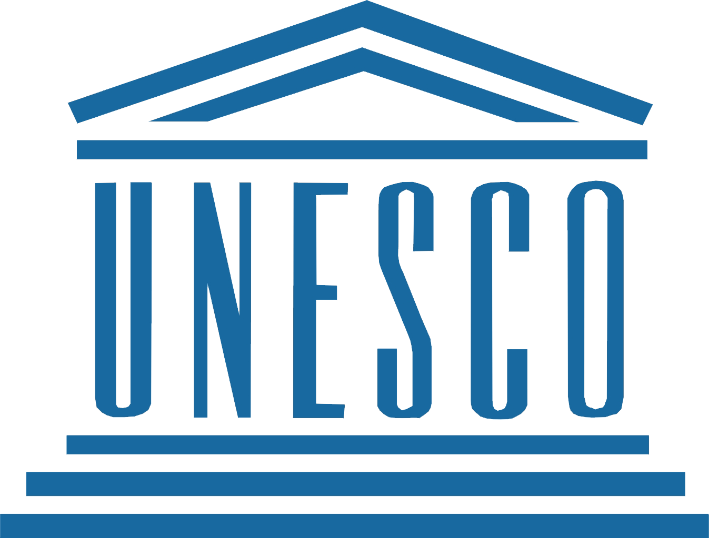
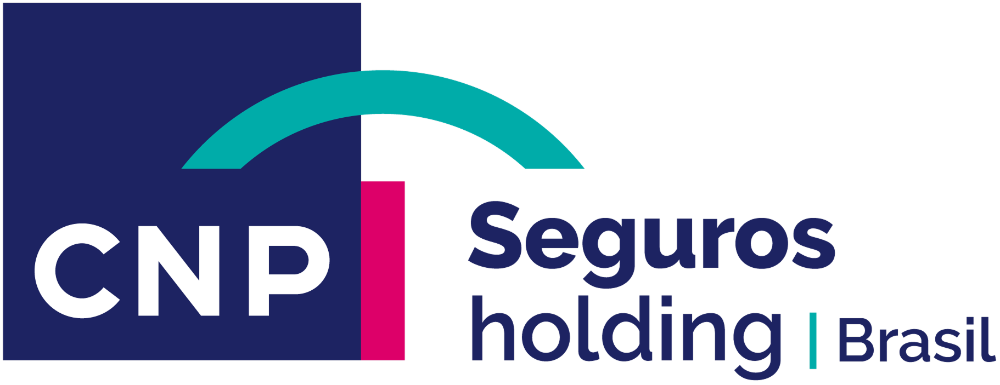
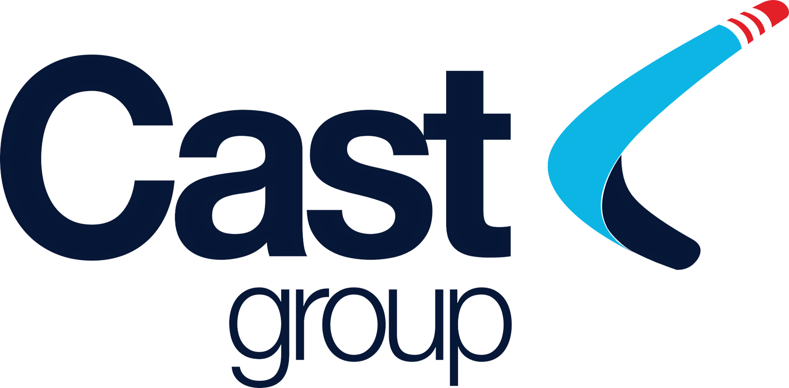

|
Estéfano Pietragalla
Construo soluções digitais baseadas em pesquisa com usuário aliando embasamento científico, estratégia e métricas de impacto. Já liderei frentes complexas de design e pesquisa em instituições como Banco do Brasil, CNP Seguros Holding Brasil e Tribunal de Contas da União. Acredito que a maturidade de produto nasce de processos estruturados, alinhamentos claros e tomadas de decisão guiadas por dados realistas.
Impulsionando resultados de negócio por meio de pesquisa aprofundada e métricas baseadas no design centrado no usuário.
São mais de 8 anos construindo produtos digitais em ecossistemas de alta complexidade, em uma jornada que se consolidou na estruturação de processos de design e DesignOps no TCU, passou pelo mapeamento de jornadas na CNP Seguros e, hoje, se aprofunda em estratégias muito bem definidas em UX Research em frentes de experiência do usuário na Caixa Econômica Federal.
Como especialista e líder em frentes de UX, guio processos de design estruturados e metodologias de pesquisa que conectam tecnologia, produto e negócio através de métricas de impacto reais. Utilizando minha bagagem em docência e mentoria, lidero o ciclo completo de experiência do usuário (End-to-End) para alinhar expectativas com lideranças e stakeholders, garantindo que o respeito rigoroso a cada etapa do processo, do Discovery à entrega, resulte em documentações e handoffs de alta precisão que elevam a maturidade dos times e tornam o valor do design visível e mensurável para o negócio.
02 — o que faço
UX Research
Analiso os comportamentos e necessidades dos usuários para gerar insights que orientem as decisões estratégicas de design e produto.
Product Design
Crio soluções digitais centradas no usuário, combinando pesquisa, usabilidade e negócios para entregar produtos eficientes e relevantes
DesignOps
Organizo processos, padrões e ferramentas que otimizam operações de design, garantindo consistência e escalabilidade dos produtos.
03 — minha jornada



Grupo Boticário
Senior Product Designer
Liderei a equipe de design no desenvolvimento de novos fluxos de checkout, resultando em um aumento de conversão de 15%. Responsável pela manutenção do design system.
Colaborei diretamente com PMs e engenheiros para definir a estratégia do produto e as prioridades do roadmap.
Conversão Aumento no checkout.
Retenção De usuários recorrentes.
Wine.com.br
Mid-level Product Designer
Responsável pela redefinição do fluxo de assinatura do clube de vinhos, simplificando a jornada do usuário e reduzindo o atrito.
Drop-off Rate Na página de pagamento.
05 — o que acredito
Design baseado em evidências e literatura
Acredito que decisões técnicas seguras não nascem do subjetivismo, mas do poder do estudo e da literatura especializada. Utilizo o rigor acadêmico, consolidado em meu mestrado e docência, para embasar escolhas de UX, garantindo que cada solução tenha fundamento teórico e prático antes mesmo da execução.
Decisões baseadas em dados
Sem dados, o design torna-se apenas uma opinião subjetiva. Utilizo métricas de UX e análises quantitativas de comportamento para validar hipóteses e mensurar o impacto real de cada entrega no produto. Monitorar e interpretar esses indicadores é o que conecta o trabalho técnico do time diretamente aos KPIs e objetivos estratégicos do negócio, transformando esforço criativo em retorno financeiro e eficiência operacional mensurável.
O poder da articulação e das conversas
Nenhum produto sobrevive ao isolamento; acredito na construção de pontas através de conversas contínuas e alinhamentos organizados com lideranças, times técnicos e stakeholders. Manter todas as áreas falando a mesma língua e com expectativas combinadas é o que transforma ruído em clareza estratégica para o roadmap.
Processo de Design
Acredito que o sucesso de um produto é o resultado direto do respeito ao processo de UX em todas as suas etapas: do Discovery à entrega. Quando respeitamos o tempo e a metodologia de cada fase, pesquisa, ideação, prototipação e testes de usabilidade, a tendência é a criação de soluções que resolvem problemas reais de forma sustentável.